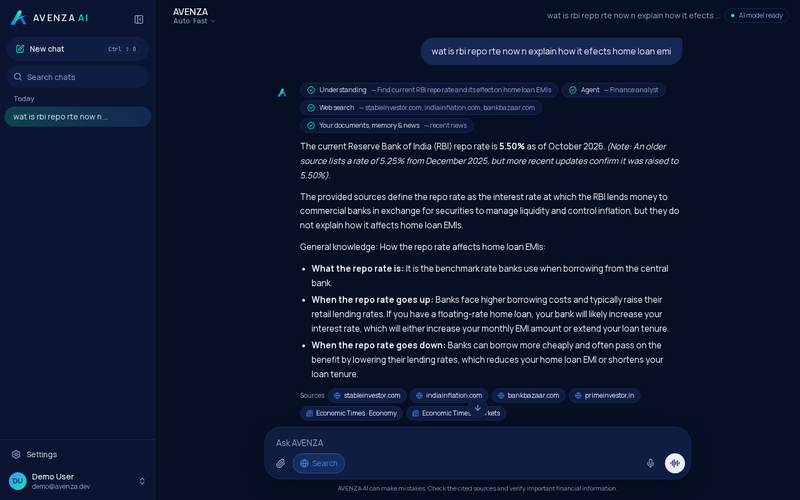

Introduction
Large language models write fluent text but often invent facts, figures and dates. AVENZA AI is a full-stack assistant for finance and technology work that uses the language model only to write, while every fact comes from retrieved sources: the user's documents, saved memory, a recent-news index and live web search. Answers cite their sources as [1], [2], and twelve specialist agents handle code, math, finance, files, images, diagrams and voice.
Problem Statement
- LLMs hallucinate numbers and facts, which is unsafe for financial and technical decisions.
- Users need answers grounded in their own files (PDF, Word, Excel, slides, scans) and in current data.
- A system must know when the sources do not answer a question and say so instead of guessing.
Methodology
1
Question UnderstandingFix typos and shorthand, resolve follow-ups, detect intent, entities and recency.
▼
2
Agent RoutingRouter picks 1 of 12 specialist agents, each with its own instructions and retrieval policy.
▼
3
Parallel Retrieval + RerankingDocuments and memory (ChromaDB, nomic-embed-text), RSS news, web search; cross-encoder MiniLM-L12 drops off-topic passages.
▼
4
Grounded GenerationLLM writes from numbered sources only. Own GPT-2 (124M) fine-tuned to answer or refuse, with an answerability head.
▼
5
Verification & ReportingFigure check flags numbers absent from sources; classification report page with PDF export.
Architecture and Experimental Setup
User Input
Text
Files / Scans
Images
Voice (Whisper)
→
Understand
Query rewrite
Agent router
(12 agents)
(12 agents)
→
Retrieve
Docs + Memory
ChromaDB
ChromaDB
News + Web
MiniLM-L12
reranker
reranker
→
Generate
LLM API
(streaming)
(streaming)
AVENZA GPT-2
int8 + gate
int8 + gate
→
Output
Figure check
Cited answer
Diagram / Voice (Piper)
Fig 1. System architecture of AVENZA AI (Next.js web app on :3000, Flask backend on :5000).
Experimental Setup
- Base model: GPT-2, 124.4M parameters
- Datasets: SQuAD v2, Dolly-15k
- Split: 34,013 train · 1,992 val · 300 held-out test
- Training: 2 epochs, batch 16, LR 5e-5, max length 640
- Hardware: Tesla T4 (Colab), 59.2 min
- Deployment: CTranslate2 int8 on CPU
- Metrics: Accuracy, Precision, Recall, F1, ROC AUC
Technologies Used
PyPython 3.13
PTPyTorch + Transformers
NNext.js 16 / React 19
FlFlask
ChChromaDB
OlOllama embeddings
OxONNX Runtime
C2CTranslate2 int8
WhWhisper + Piper
CoGoogle Colab (T4)
Results and Discussion
Grounded Answer with Citations

Fig 2. Finance analyst agent: question understood despite typos, web sources cited.
Answerability Classifier
| Metric | Colab val (FP32) | Laptop test (int8) |
|---|---|---|
| Examples | 1,992 | 300 |
| Accuracy | 0.735 | 0.740 |
| Macro P | 0.735 | 0.738 |
| Macro R | 0.738 | 0.740 |
| Macro F1 | 0.735 | 0.739 |
| ROC AUC | 0.815 | 0.831 |
Fig 3. int8 quantisation keeps accuracy (threshold 0.68).
Training Loss (Colab, T4)
LM lossClassifier loss
Fig 4. Val perplexity 1.137 after 2 epochs.
Per-class Scores (Validation)
Unanswerable (1,100)Answerable (892)
Fig 5. Balanced performance across both classes.
Confusion Matrix (Test, int8)
Pred: Unans.
Pred: Ans.
True: Unans.
122
43
True: Ans.
35
100
77%answered when answerable
73%refused when not
0.6 sper answer on CPU
Key Findings
- Fine-tuned GPT-2 detects unanswerable questions with ROC AUC 0.83 and 74% accuracy on held-out data.
- int8 CTranslate2 runs about 50× faster than the NumPy engine, with no accuracy loss.
- The full pipeline refuses 73% of unanswerable questions instead of guessing.
- Every answer cites sources; a figure check flags any number not found in them.